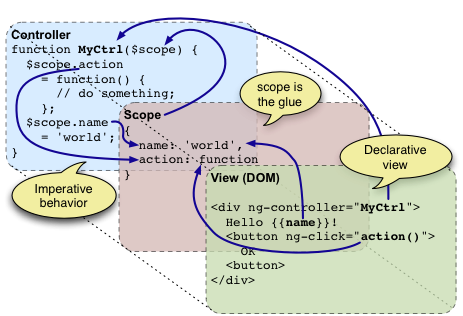
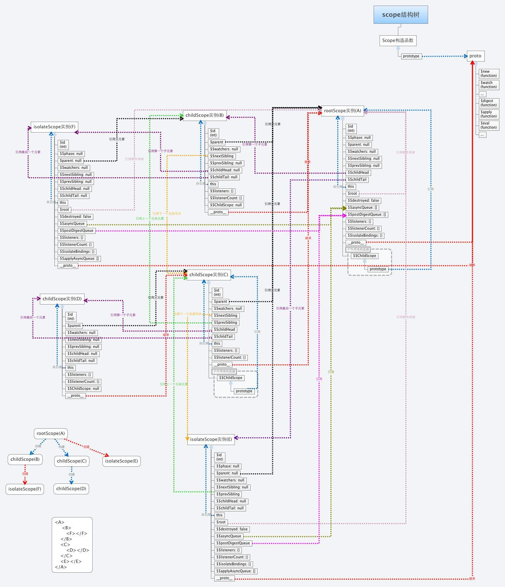

# Angular深度知识整理
### 1. $destroy 回收资源
$destroy是Angular用来回收资源的,当创建scope时,就会创建一个未来删除这个scope时的事件回调函数($destroy).
同时也可以手动创建删除事件($destroy)的回调.
当视图中dom删除后对应的scope也会被删除, 从而触发$destroy事件. 可以通过监听视图的$destroy 执行想要的操作
```
<!-- html部分 -->
<p>
<a href="#" ng-click="toggle()">切换页面</a>
</p>
<div ng-switch="section">
<p ng-switch-when="happy" bn-directive>
哈哈 happy页面
</p>
<p ng-switch-when="sad" bn-directive>
555~~~ sad 页面
</p>
</div>
<script type="text/javascript">
var app = angular.module( "Demo", [] );
// 定义控制器
app.controller(
"DemoController",
function( $scope ) {
$scope.section = "happy";
//在toggle函数中改变section的值，以此在标记中显示/隐藏不同的部分
$scope.toggle = function() {
if ( $scope.section === "happy" ) {
$scope.section = "sad";
} else {
$scope.section = "happy";
}
};
}
);
// -------------------------------------------------- //
// -------------------------------------------------- //
//定义指令
app.directive(
"bnDirective",
function( $timeout ) {
//将用户界面的事件绑定到$scope上
function link( $scope, element, attributes ) {
//当DOM元素从页面中被移除时，AngularJS将会在scope中触发$destory事件。这让我们可以有机会来cancel任何潜在的定时器
$scope.$on(
"$destroy",
function( event ) {
console.log("destroyed");
$timeout.cancel( timer );
}
);
}
//返回指令的配置
return({
link: link,
scope: false
});
}
);
</script>
```
### 2. 理解$scope
#### 2.1. $scope是用于联系控制器与视图的桥梁.

有了 $scope 这样一个桥梁,应用的业务代码可以都在 controller 中,而数据都存放在controller 的 $scope 中.
#### 2.2. $rootScope
AngularJS 应用启动并生成视图时,会将根 ng-app 元素与 $rootScope 进行绑定.$rootScope 是所有 $scope 的最上层对象,可以理解为一个 AngularJS 应用中得全局作用域对象,所以为它附加太多逻辑或者变量并不是一个好主意,和污染 Javascript 全局作用域是一样的.
#### 2.3. $scope的作用
$scope充当的是数据模型(VM)的作用, 通过$scope来操控视图与controller中的数据
它的作用与功能:
1. 提供了观察者监听视图数据的变化
2. 将数据的变化更新到视图
3. 可以进行嵌套, 隔离业务功能和数据
4. 给表达式提供上下文执行环境
#### 2.4. $scope的生命周期
1. 创建
当控制器或指令创建时, Angular会使用$injector创建一个新的作用域, 在控制器或指令运行时,将作用域传递进去
2. 链接
AngularJS启动后会把所有的 $scope 对象附加或者说链接到视图上, 所有创建$scope的函数(指令或控制器中的)也会附加到视图上, 这些作用域会注册当AngularJS 上下文发生变化时需要运行的函数, 也就算 $watch 函数, AngularJS 通过这些函数获知何时开始事件循环.
3. 更新
视图或数据更新后, 会执行脏值检测, 如果检测到变化, 触发$scope上的回调函数, 同步视图数据.
4. 销毁
通常来讲如果一个 $scope 在视图中不再需要, AngularJS 会自己清理它.当然也可以通过 $destroy() 函数手动清理.
### 3. 自定义指令中的require
require 用来引用其他指令, 可以获取其作用域, 同时可以使用该指令中的的方法. 实现方法的复用或传递信息.
require 可以获取指令所在元素内部或同级的指令, 要获取父级元素上的指令需要通过"^"来修饰. 如果使用"?"前缀，就意味着如果在当前指令没有找到控制器，就将null作为link的第四个参数；
引用多个指令可以require 一个数组, 在link中 通过数组下标来获取不同的指令元素
可以引用 ngModel 指令,则能获取该指令所在元素中的 $viewValue 等值
```
<add minor class="col-md-2 col-md-offset-3">
<div >次数: {{ count }}</div>
<figure></figure>
</add>
<script type="text/javascript">
angular.module("app",[])
.directive("add",function(){
return{
restrict:'ECMA',
controller:function($scope){
$scope.count=0;
this.addCount=function(){
$scope.$apply(function(){
$scope.count++;
})
}
}
}
})
.directive("minor",function(){
return{
restrict:'ECAM',
controller:function($scope){
this.reduceCount=function(){
$scope.$apply(function(){
$scope.count--;
})
}
}
}
})
.directive("figure",function(){
return{
restrict:'ECMA',
template:'<button id="add" class="btn btn-default">增加</button>'+
'<button id="minor" class="btn btn-danger">减少</button>'+
'<div>{{ figureCtrl.temp }}</div>',
require:['?^add','?^minor'],
controller:function(){
this.temp="这个属性被隔离开，可通过controllerAs创建的动态对象调用";
},
controllerAs:'figureCtrl',
link:function(scope,element,attrs,resultCtrl){
angular.element(document.querySelector('#minor')).on('click',resultCtrl[1].reduceCount);
angular.element(document.querySelector('#add')).on('click',resultCtrl[0].addCount);
}
}
})
</script>
```
### 4. Angular中的信息传递方式
#### 4.1 Angular的消息方式 $emit $broadcast $on
同个作用域链中可以通过该方式传递消息
$emit（向上冒泡），broadcast（向下广播）. $on设置监听事件
#### 4.2 通过嵌套的作用域传递消息
#### 4.3 利用service定义一个服务(观察者模式)来传递消息
服务(service)提供了一种能在应用的整个生命周期内保持数据的方式，能够在控制器之间进行通信，且能保证数据的一致性。
一般我们都会封装server来为应用提供访问数据的接口，或者跟远程进行数据交互。
### 5. $Scope
#### 5.1 $rootScope.
根作用域$rootScope，其实就是Scope类的一个实例.
scope 类的属性方法
```
function Scope() {
// 省略属性定义
}
Scope.prototype = {
constructor: Scope,
$new: function(isolate) {...},
$watch: function(watchExp, listener, objectEquality) {...},
$watchGroup: function(watchExpressions, listener) {...},
$watchCollection: function(obj, listener) {...},
$digest: function() {...},
$destroy: function() {...},
$eval: function(expr, locals) {...},
$evalAsync: function(expr) {...},
$apply: function(expr) {...},
$applyAsync: function(expr) {...},
$on: function(name, listener) {...},
$emit: function(name, args) {...},
$broadcast: function(name, args) {...}
};
```
#### 5.1 scope作用域树
作用域之间是通过原型链继承的.
对于孤立作用域是作为没有任何继承关系的单独作用域存在.

从这张图里面我们可以看出的不仅是作用域的继承关系还有作用域之间及父子兄弟关系：
1. 普通的作用域通过原型链实现了继承关系，孤立作用域没有任何继承关系。
所有的作用域之间（也包括孤立作用域）根据自身所处的位置都存在以下这些关系：
>* $root来访问跟作用域
>* $parent来访问父作用域
>* $childHead（$childTail）访问头（尾）子作用域
>* prevSibling（$nextSibling）访问前（后）一个兄弟作用域
这样的关系便形成了一个作用域树，通过它便可以完成作用域的向上（下）的遍历，从而实现后面的消息传递，$emit（向上冒泡），broadcast（向下广播）
所有的作用域都引用同一个$$asyncQueue和$$postDigestQueue
### 6. 指令
#### 6.1 module对象的directive方法的实质
Angular中的功能是由一个个模块实现的.通过setupModuleLoader 函数来加载模块.
#### 6.2 指令队列
当调用directive方法定义指令时只是加到了指令队列里, 并没有注册.
在Angular执行bootstrap() 方法后,通过调用$compileProvider.directive()方法实现的。
#### 6.3 指令编译顺序
现从外到内执行compile, 再从外到内执行pre-link, 最后从内到外执行post-link
### 7. Angular的性能优化
#### 7.1 消息事件的优化 $emit
$emit会向上冒泡到根作用域. 可以通过设置event.stopPropagation 在目标作用域阻止其冒泡
### 8. angular $watch, $digest, $apply 方法的区别
### $watch(watchExpression, listener, objectEquality)
watchExpression和listener可以是一个string，也可以是一个function（scope）
$watch 用法
```
//$scope.$watch(<function/expression>, <handler>);
// $watch函数会返回一个释放$watch绑定的unbind函数。所以当我们不再需要watch改变的时候，我们可以调用这个函数释放$watch。
var unbind = $scope.$watch('foo', function(newVal, oldVal) {
console.log(newVal, oldVal);
});
//or
$scope.$watch(function() {
return $scope.foo;
}, function(newVal, oldVal) {
console.log(newVal, oldVal);
});
```
$watch表达式在每次调用了$digest方法之后都会重新算值，如果返回值发生了改变，listener就会执行。在判断newValue和oldValue是否相等时，会递归的调用angular.equals方法。在保存值以备后用的时候调用的是angular.copy方法。listener在执行的时候，可能会修改数据从而触发其他的listener或者自己直到没有检测到改变为止。Rerun Iteration的上限是 10 次，这样能够保证不会出现死循环的情况。
$watch函数会返回一个释放$watch绑定的unbind函数。所以当我们不再需要watch改变的时候，我们可以调用这个函数释放$watch。
### $digest()
该方法会触发当前scope以及child scope中的所有watchers，因为watcher的listener可能会改变model，所以$digest方法会一直触发watchers直到不再有listener被触发。当然这也有可能会导致死循环，不过angular也帮我们设置了上限 10 ！否则会抛出“ Maximum iteration limit exceeded. ”。
通常，我们不在controller或者directive中直接调用$digest方法，而是调$apply方法，让$apply方法去调用$digest方法。
$digest()的调用方法
```
$scope.$digest()
```
### $apply(exp)
个人理解，$apply方法就是将$digest方法包装了一层，exp是可选参数，可以是一个string，也可以是function（scope）。
### $watch、$digest、$apply是如何与视图的更新相关联的呢？
1. directive给$scope上的一个model注册$watch来监视它的变化，listener会去更新DOM元素的值。
2. directive给DOM中的一些元素注册event handler，它们会取得DOM中元素的值，然后更新到$scope上的model中去。它也会触发$apply或者$digest。
3. 当你通过框架更新了$scope上model的值，比如说：$http.get()，当它完成后也会触发$digest方法。
4. $digest会去检查directive注册的$watch，发现值被修改就会触发相关联的handler，然后更新DOM元素。
> $watch
当$scope上的值发生变化时，尽量在directive中使用$watch去更新DOM。
尽量不要在controller中使用$watch方法，它会增加测试的复杂度，而且也不必要。可以使用scope上的方法去更新被改变的值。
> $digest、$apply
在directive中使用$digest/$apply使angular知道一个异步请求完成后的变化，比如说DOM Event。
在service中使用$digest/$apply使angular知道一个异步操作已经完成，比如说WebSocket、或者第三方的库。
尽量不要再controller中使用$digest/$apply，这样的话测试起来会比较困难。